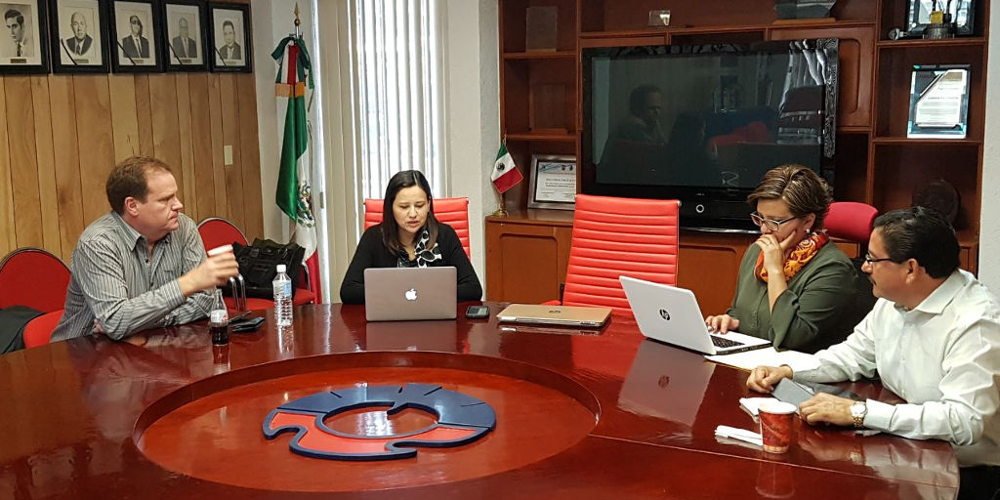

Comisión Ejecutiva del Sistema Anticorrupción del Estado de Coahuila de Zaragoza.
Primera Sesión Extraordinaria 2018
La coordinadora de la Comisión Ejecutiva, a cargo de la consejera Ana Yuri Solís verificó el quórum requerido para llevar a cabo la primera sesión extraordinaria de la Comisión en el 2018 y dio fe de la aprobación del orden del día.
Entre los temas a tratar fueron revisar el avance del programa de trabajo de la Comisión Ejecutiva en lo referente, a la propuesta de política integral en materia de prevención, control y disuasión de faltas administrativas y hechos de corrupción; en el planteamiento sobre capacitación, cooperación, promoción y difusión de temas en materia de transparencia, acceso a la información y protección de datos personales; en la propuesta sobre las directrices básicas para la generación de políticas públicas en materia de denuncia, investigación y sanción de la corrupción; así como sugerir un mecanismo para armonizar la recopilación, sistematización, procesamiento, intercambio y actualización de información sobre corrupción, en formato de datos abiertos; entre otros.
Por otra parte, se intercambiaron opiniones sobre las propuestas hechas, por parte de todos los participantes, en el primer encuentro de los Comités de Participación Ciudadana del país, con el propósito de conocer el avance de los trabajos de la Comisión de Coahuila y de las buenas prácticas en materia de proyectos que combatan la corrupción.
Estuvieron presentes María de Lourdes de Koster López, Juan Adolfo Von Bertrab Saracho, Carlos Rangel Orona y Ana Yuri Solís Gaona.
Primera sesión extraordinaria 2018 de la Comisión Ejecutiva del Sistema Anticorrupción del Estado de Coahuila de Zaragoza. 27 de febrero 2018.
